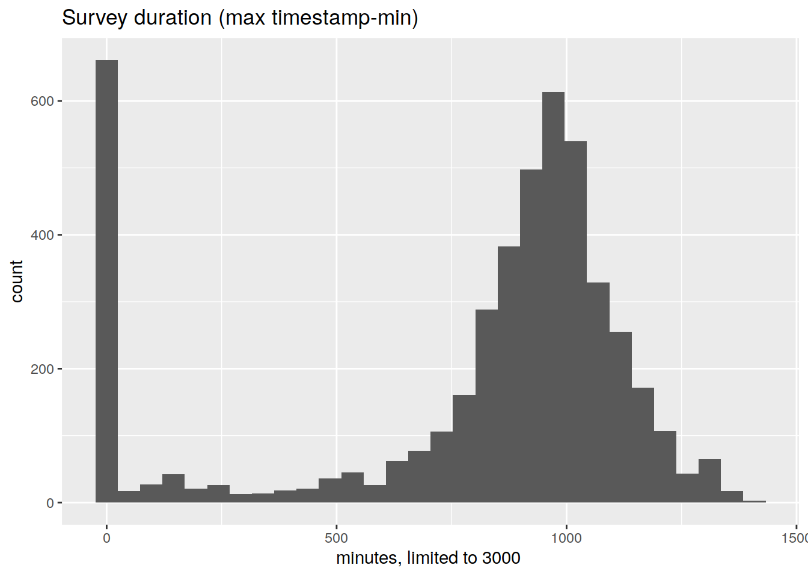
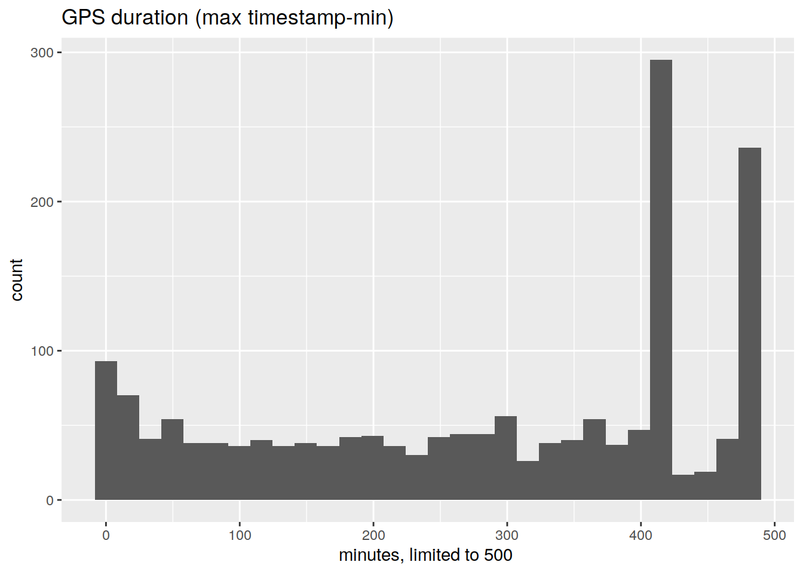

Last updated: 2019-07-08
Checks: 4 2
Knit directory: initialAnalysis/
This reproducible R Markdown analysis was created with workflowr (version 1.3.0.9000). The Checks tab describes the reproducibility checks that were applied when the results were created. The Past versions tab lists the development history.
The R Markdown is untracked by Git. To know which version of the R Markdown file created these results, you’ll want to first commit it to the Git repo. If you’re still working on the analysis, you can ignore this warning. When you’re finished, you can run wflow_publish to commit the R Markdown file and build the HTML.
Great job! The global environment was empty. Objects defined in the global environment can affect the analysis in your R Markdown file in unknown ways. For reproduciblity it’s best to always run the code in an empty environment.
The command set.seed(20180727) was run prior to running the code in the R Markdown file. Setting a seed ensures that any results that rely on randomness, e.g. subsampling or permutations, are reproducible.
Great job! Recording the operating system, R version, and package versions is critical for reproducibility.
To ensure reproducibility of the results, delete the cache directory exploreStaypointBase_cache and re-run the analysis. To have workflowr automatically delete the cache directory prior to building the file, set delete_cache = TRUE when running wflow_build() or wflow_publish().
Great! You are using Git for version control. Tracking code development and connecting the code version to the results is critical for reproducibility. The version displayed above was the version of the Git repository at the time these results were generated.
Note that you need to be careful to ensure that all relevant files for the analysis have been committed to Git prior to generating the results (you can use wflow_publish or wflow_git_commit). workflowr only checks the R Markdown file, but you know if there are other scripts or data files that it depends on. Below is the status of the Git repository when the results were generated:
Ignored files:
Ignored: analysis/exploreStaypointBase_cache/
Ignored: analysis/explore_locations_cache/
Ignored: analysis/figure/
Ignored: data/ldr/
Ignored: data/sql_load/
Ignored: data/summary/
Untracked files:
Untracked: analysis/exploreStaypointBase.Rmd
Untracked: analysis/explore_locations.Rmd
Untracked: analysis/explore_locations_tmap_error.Rmd
Untracked: analysis/overlaps.Rmd
Untracked: b.rds
Untracked: docs/figure/explore_locations.Rmd/
Untracked: lib/location_prep.R
Unstaged changes:
Modified: a.rds
Modified: analysis/mark_staypoint_systematic.Rmd
Modified: lib/geodist.R
Modified: lib/gps_functions.R
Deleted: sink-examp.txt
Note that any generated files, e.g. HTML, png, CSS, etc., are not included in this status report because it is ok for generated content to have uncommitted changes.
There are no past versions. Publish this analysis with wflow_publish() to start tracking its development.
options(warn=-1)
source('lib/functions.R')
source('lib/get_data.R')
source('lib/location_prep.R')
library(tidyverse)
library(tsibble)
library(lubridate)
library(sp)
opts_chunk$set(cache=TRUE, autodep=TRUE)
df_location = get_df_location()
df_best_location = get_df_best_location( df_location )
df_all = get_df_all()
df_all_ts = get_df_all_ts( df_all )Ten most popular survey orderings
df_all %>%
select( userid, day, id ) %>%
inner_join( df_all_ts, by='id') %>%
arrange( userid, day, ts ) %>%
group_by( userid, id ) %>%
summarise( ordr = paste( which, collapse='-')) %>%
ungroup() %>%
count( ordr, sort=TRUE ) %>%
head(10)# A tibble: 10 x 2
ordr n
<chr> <int>
1 pre-dq-env-video-tom 463
2 pre-load-dq-tom 449
3 tom 440
4 pre-load-dq-env-video-tom 438
5 pre-dq-tom 406
6 pre-tom 403
7 pre-forg-tom 375
8 pre-load-forg-tom 282
9 pre-load-tom 162
10 forg-tom 112df_all %>%
mutate( id = row_number()) %>%
select( userid, day, id ) %>%
inner_join( df_all_ts, by='id') %>%
arrange( userid, day, ts ) %>%
group_by( userid, id ) %>%
summarise( d=as.numeric( max( ts ) - min( ts), units='mins')) %>%
filter( d<3000 ) %>%
ggplot( aes( d)) + geom_histogram() + xlab("minutes, limited to 3000 ") + ggtitle( 'Survey duration (max timestamp-min)')`stat_bin()` using `bins = 30`. Pick better value with `binwidth`.
df_best_location %>%
group_by( userid, night ) %>%
summarise( d = as.numeric( max( local_time ) - min( local_time ), units='mins' ),
max( local_time ) , min( local_time ),
n=n()) %>%
filter( d<500 ) %>%
ggplot( aes( d)) + geom_histogram() + xlab("minutes, limited to 500 ") + ggtitle( 'GPS duration (max timestamp-min)')`stat_bin()` using `bins = 30`. Pick better value with `binwidth`.
df_all %>%
select( userid, night, id ) %>%
inner_join( df_all_ts, by='id') %>%
group_by( userid, night ) %>%
summarise( night_min = min( date( ts ))
, max_ts = max( ts )
, min_ts = min( ts )
, ordr = paste( which, collapse='-')) %>%
ungroup() %>%
{ . } -> df_all_nights
df_all %>%
select( userid, day, id ) %>%
inner_join( df_all_ts, by='id') %>%
arrange( userid, day, ts ) %>%
group_by( userid, id ) %>%
summarise( ordr = paste( which, collapse='-')) %>%
ungroup() %>%
count( ordr, sort=TRUE ) %>%
head(10)# A tibble: 10 x 2
ordr n
<chr> <int>
1 pre-dq-env-video-tom 463
2 pre-load-dq-tom 449
3 tom 440
4 pre-load-dq-env-video-tom 438
5 pre-dq-tom 406
6 pre-tom 403
7 pre-forg-tom 375
8 pre-load-forg-tom 282
9 pre-load-tom 162
10 forg-tom 112first, GPS traces with NO surveys
df_best_location %>%
distinct( userid, night ) %>%
anti_join( df_all_nights) %>%
arrange( userid, night) %>%
nrow()Joining, by = c("userid", "night")[1] 122next, number of survey evenings with no GPS traces :-(
df_all_nights %>%
anti_join( df_best_location ) %>%
arrange( userid, night) %>%
nrow()Joining, by = c("userid", "night")[1] 1250We can assume survey timezones are correct, despite them being very disparate. For example,
df_all_ts %>%
count( timezone ) %>%
arrange( desc( n), timezone) %>%
head(20)# A tibble: 20 x 2
# Groups: timezone [20]
timezone n
<chr> <int>
1 Europe/Zurich 12648
2 Europe/Sarajevo 1478
3 Europe/Amsterdam 823
4 Europe/Paris 313
5 Europe/Madrid 141
6 Europe/Berlin 101
7 Europe/Rome 71
8 Atlantic/Cape_Verde 39
9 Europe/Belgrade 38
10 Europe/Vienna 30
11 Europe/Istanbul 23
12 Europe/London 20
13 America/Costa_Rica 18
14 Asia/Nicosia 17
15 Europe/Brussels 10
16 Africa/Tunis 8
17 Europe/Ljubljana 3
18 Africa/Ceuta 2
19 America/Regina 2
20 Europe/Zagreb 2Sometime surveys from the same night are 2 or more timezones!
df_all %>%
select( userid, night, id ) %>%
inner_join( df_all_ts, by='id') %>%
group_by( userid, night ) %>%
distinct( timezone, .keep_all=TRUE ) %>%
inner_join( df_all_nights) %>%
mutate( n=n()) %>%
filter( n > 1) %>%
arrange( desc( n), ts) %>%
select( -night_min, -max_ts, -min_ts, -userid, -timestamp) Joining, by = c("userid", "night")Adding missing grouping variables: `userid`# A tibble: 218 x 8
# Groups: userid, night [108]
userid night id which timezone ts ordr n
<fct> <date> <int> <chr> <chr> <dttm> <chr> <int>
1 33dc17… 2014-11-07 690 pre Europe/… 2014-11-07 17:22:13 pre-d… 3
2 33dc17… 2014-11-07 690 dq Europe/… 2014-11-08 01:54:55 pre-d… 3
3 33dc17… 2014-11-07 690 tom Europe/… 2014-11-08 14:17:19 pre-d… 3
4 33dc17… 2014-11-14 694 pre Europe/… 2014-11-14 18:55:44 pre-d… 3
5 33dc17… 2014-11-14 694 dq Europe/… 2014-11-14 23:08:17 pre-d… 3
6 33dc17… 2014-11-14 694 tom Europe/… 2014-11-15 09:24:27 pre-d… 3
7 ab5016… 2014-09-19 2877 pre Europe/… 2014-09-19 15:04:25 pre-l… 2
8 5bfdf0… 2014-09-19 1440 pre Europe/… 2014-09-19 15:05:08 pre-l… 2
9 52bd47… 2014-09-19 1275 pre Europe/… 2014-09-19 15:59:34 pre-l… 2
10 b5f8d7… 2014-09-19 3116 pre Europe/… 2014-09-19 16:00:20 pre-d… 2
# … with 208 more rowstimezone, time_stamp , and localtime all consistent (if we take DST into account). We can use time_stamp
df_location %>%
mutate( lt = local_time %>% as.character() %>% ymd_hms( tz = "UTC") %>% seconds() - time_stamp- timezone) %>%
count( lt )# A tibble: 2 x 2
lt n
<Period> <int>
1 0S 1460580
2 3600S 6490df_all_ts %>%
mutate( timestamp= seconds( ts )) %>%
{ . } -> df_all_ts
sessionInfo()R version 3.4.4 (2018-03-15)
Platform: x86_64-pc-linux-gnu (64-bit)
Running under: Ubuntu 18.04.2 LTS
Matrix products: default
BLAS: /usr/lib/x86_64-linux-gnu/openblas/libblas.so.3
LAPACK: /usr/lib/x86_64-linux-gnu/libopenblasp-r0.2.20.so
locale:
[1] LC_CTYPE=en_AU.UTF-8 LC_NUMERIC=C
[3] LC_TIME=en_AU.UTF-8 LC_COLLATE=en_AU.UTF-8
[5] LC_MONETARY=en_AU.UTF-8 LC_MESSAGES=en_AU.UTF-8
[7] LC_PAPER=en_AU.UTF-8 LC_NAME=C
[9] LC_ADDRESS=C LC_TELEPHONE=C
[11] LC_MEASUREMENT=en_AU.UTF-8 LC_IDENTIFICATION=C
attached base packages:
[1] stats4 parallel stats graphics grDevices utils datasets
[8] methods base
other attached packages:
[1] sp_1.3-1 tibbletime_0.1.2 glue_1.3.1
[4] zoo_1.8-5 geosphere_1.5-7 keyring_1.1.0
[7] RPostgreSQL_0.6-2 DBI_1.0.0 forcats_0.4.0
[10] dplyr_0.8.1 purrr_0.3.2 readr_1.3.1
[13] tidyr_0.8.3 tibble_2.1.3 ggplot2_3.2.0
[16] tidyverse_1.2.1 multidplyr_0.0.0.9000 IRanges_2.12.0
[19] S4Vectors_0.16.0 BiocGenerics_0.24.0 fuzzyjoin_0.1.4
[22] DataCache_0.9 wrapr_1.8.6 readstata13_0.9.2
[25] lubridate_1.7.4 knitr_1.23 stringr_1.4.0
[28] magrittr_1.5 workflowr_1.3.0.9000 tsibble_0.8.0
[31] nvimcom_0.9-82
loaded via a namespace (and not attached):
[1] Rcpp_1.0.1 lattice_0.20-35 zeallot_0.1.0 utf8_1.1.4
[5] assertthat_0.2.1 rprojroot_1.3-2 digest_0.6.19 R6_2.4.0
[9] cellranger_1.1.0 backports_1.1.4 evaluate_0.13 httr_1.4.0
[13] pillar_1.4.1 rlang_0.4.0 lazyeval_0.2.2 readxl_1.3.1
[17] rstudioapi_0.10 rmarkdown_1.12 munsell_0.5.0 broom_0.5.2
[21] compiler_3.4.4 modelr_0.1.4 xfun_0.7 pkgconfig_2.0.2
[25] htmltools_0.3.6 tidyselect_0.2.5 codetools_0.2-15 fansi_0.4.0
[29] crayon_1.3.4 withr_2.1.2 grid_3.4.4 nlme_3.1-137
[33] jsonlite_1.6 gtable_0.3.0 git2r_0.25.2 scales_1.0.0
[37] cli_1.1.0 stringi_1.4.3 fs_1.3.1 xml2_1.2.0
[41] vctrs_0.1.0 generics_0.0.2 tools_3.4.4 hms_0.4.2
[45] yaml_2.2.0 colorspace_1.4-1 rvest_0.3.4 haven_2.1.0